JTBD 1
Когда у меня появляются разные бытовые задачи: купить, продать, найти, я хочу решать их в одном приложении, чтобы не искать отдельные сервисы для каждой ситуации
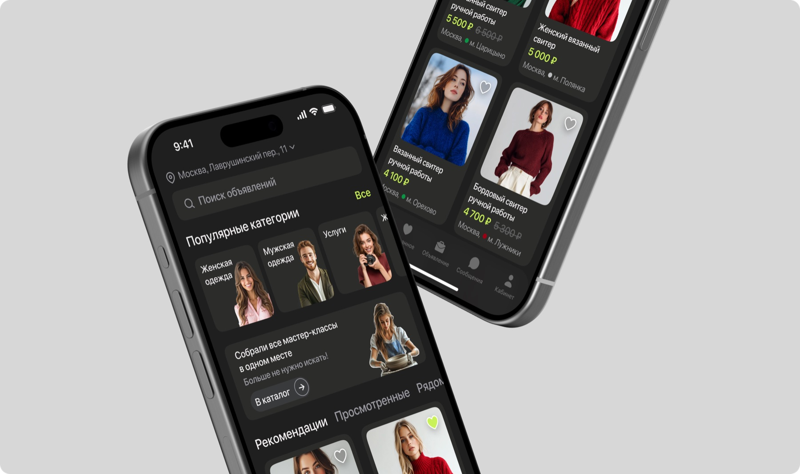
Спроектировать мобильный сервис для размещения и поиска объявлений, который поможет пользователям продавать ненужные вещи, приобретать товары по доступной цене и продлевать жизненный цикл предметов через повторное использование
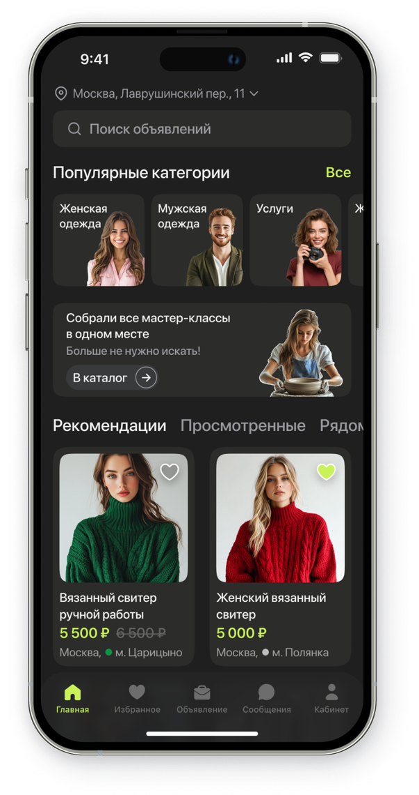
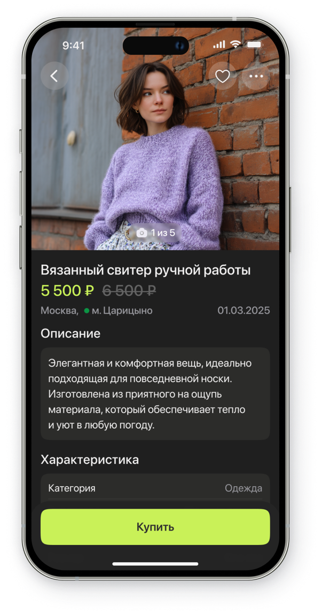
В приложениях объявлений один и тот же человек может быть и покупателем, и продавцом, но переключение между этими сценариями часто остаётся неудобным: поиск, размещение, общение и управление сделками ощущаются разрозненно
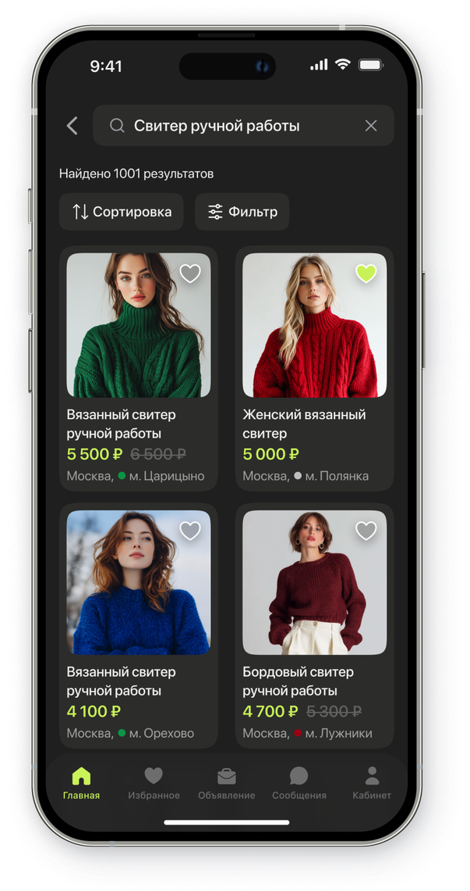
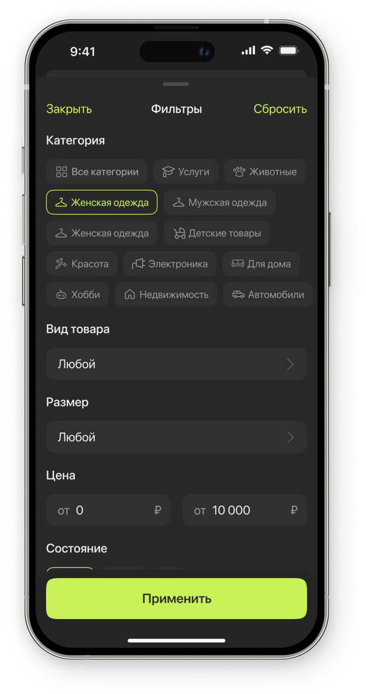
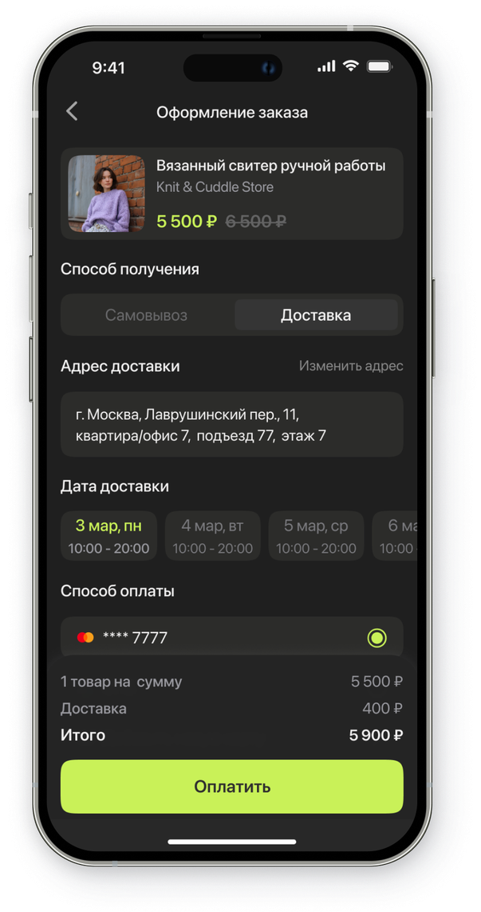
Когда у меня появляются разные бытовые задачи: купить, продать, найти, я хочу решать их в одном приложении, чтобы не искать отдельные сервисы для каждой ситуации
Когда мне нужно быстро найти конкретный товар или услугу, я хочу воспользоваться поиском и фильтрами, чтобы не просматривать сотни нерелевантных объявлений
Когда мне нужно продать товар или предложить услугу, я хочу быстро создать понятное объявление, чтобы привлечь релевантных покупателей, получить отклики и договориться о сделке
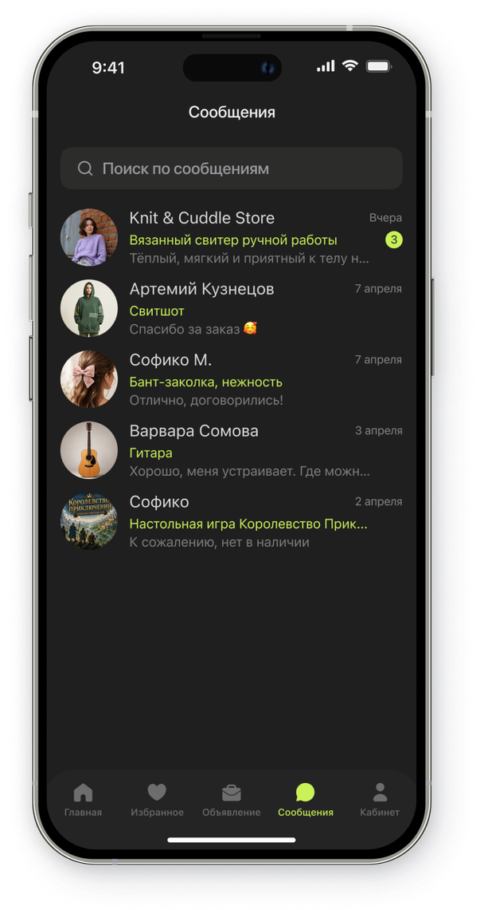
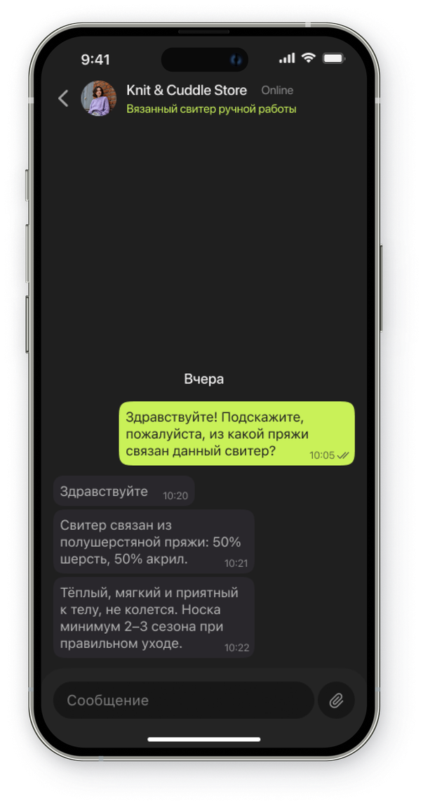
Изучила профильные приложения и маркетплейсы, чтобы определить основные сценарии, сильные стороны конкурентов и возможные точки улучшения
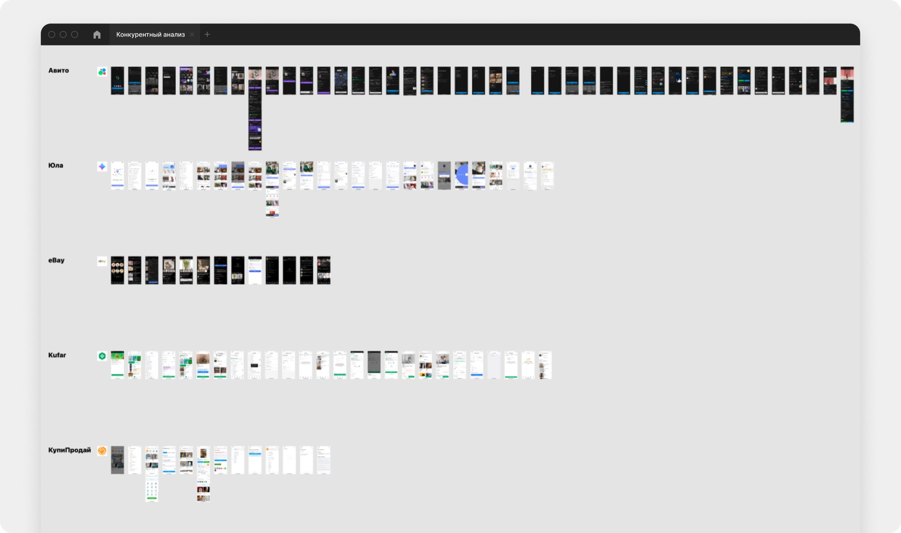
Если показывать объявления рядом, то откликов станет больше, потому что покупать поблизости удобнее
Если добавить отзывы о продавце, то доверие покупателей вырастет, потому что они увидят опыт других пользователей
Если добавить чат в приложении, то сделки будут обсуждаться быстрее, потому что весь диалог будет в одном месте
Если на главном экране показывать рекомендации, то пользователи будут чаще просматривать объявления
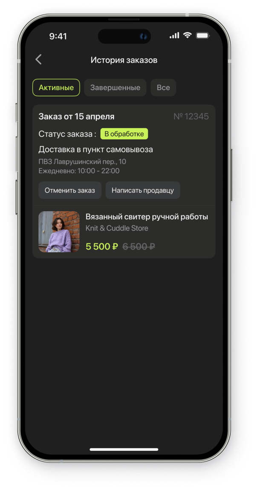
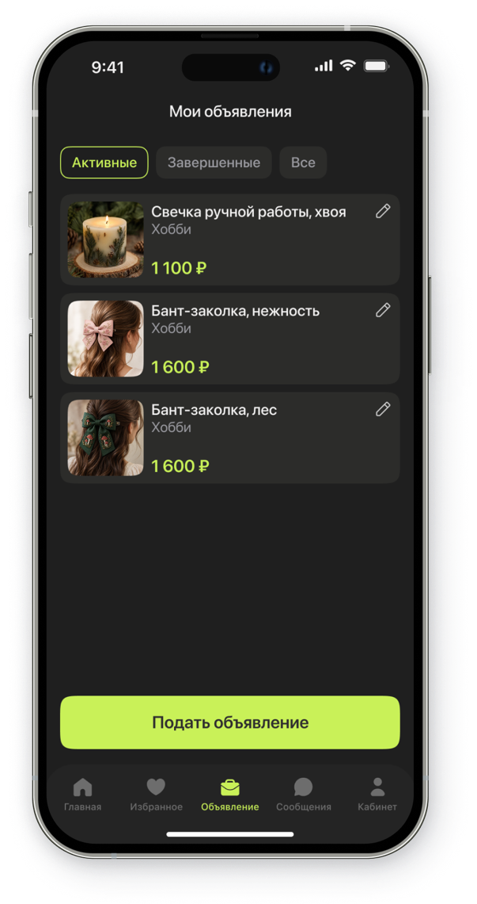
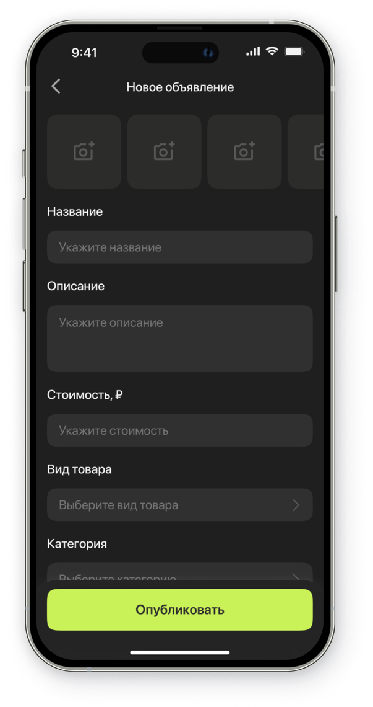
После анализа конкурентов и определения ключевых сценариев я спроектировала user flow: от регистрации пользователя до оформления покупки и написания отзыва
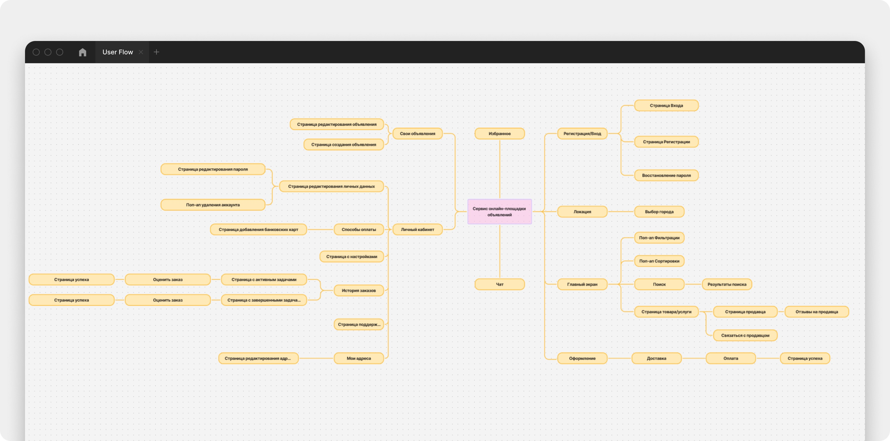
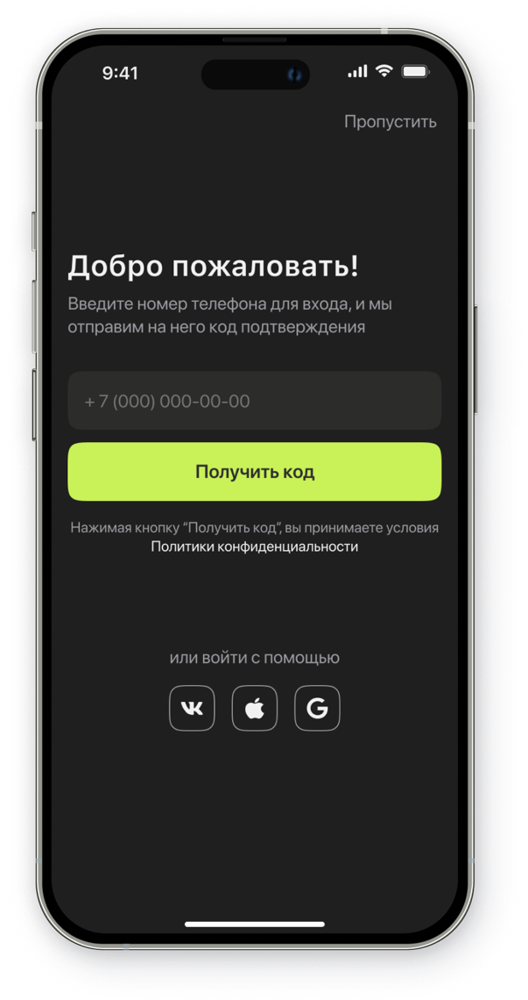
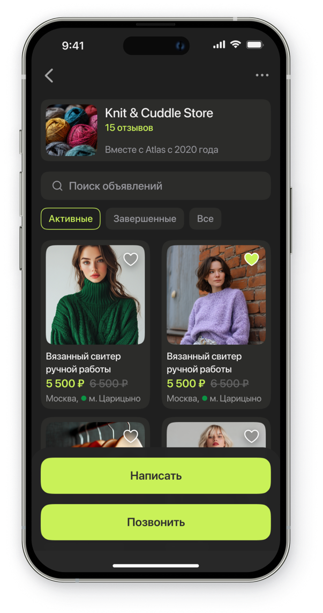
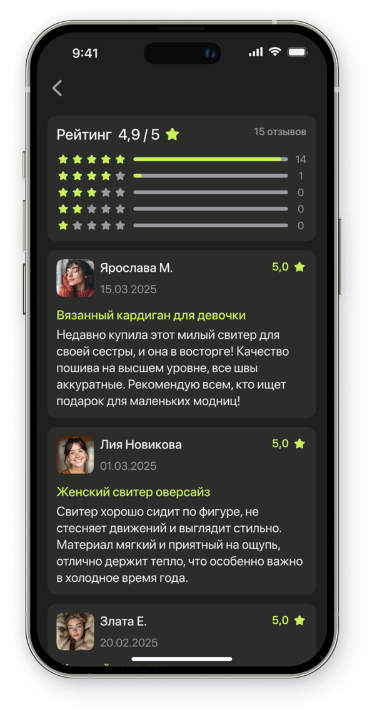
Подготовила MVP: провела интервью и бенчмаркинг, спроектировала User Flow для поиска, размещения и покупки объявлений. Решение делает пользовательский путь проще: от быстрого поиска подходящих предложений до удобного размещения объявления и безопасного перехода к сделке